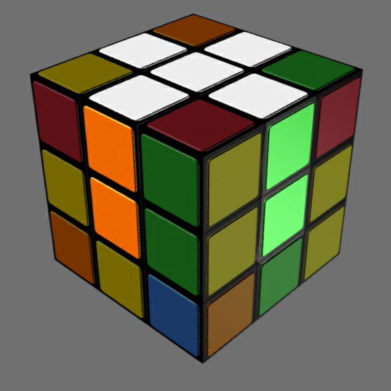
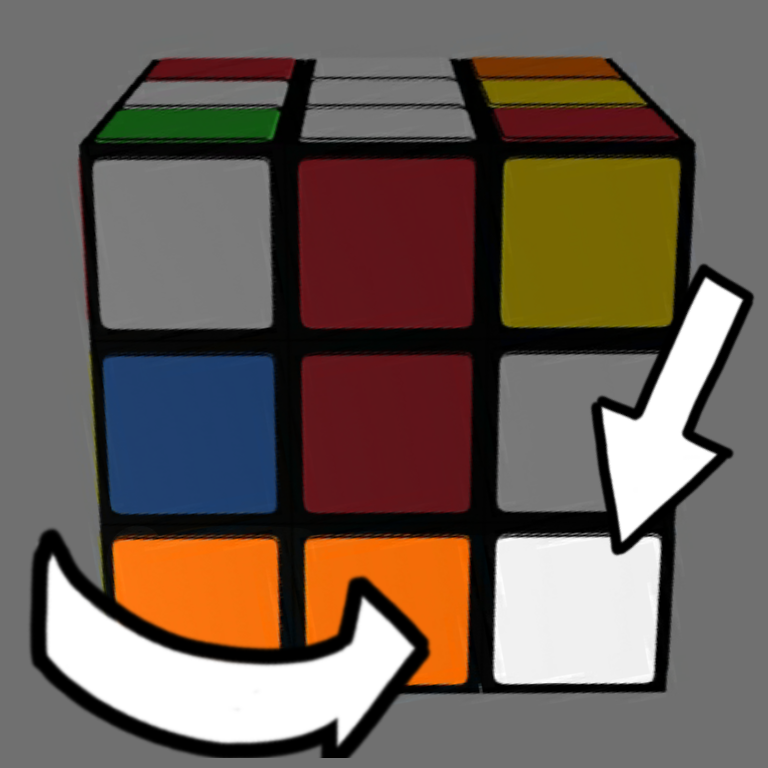
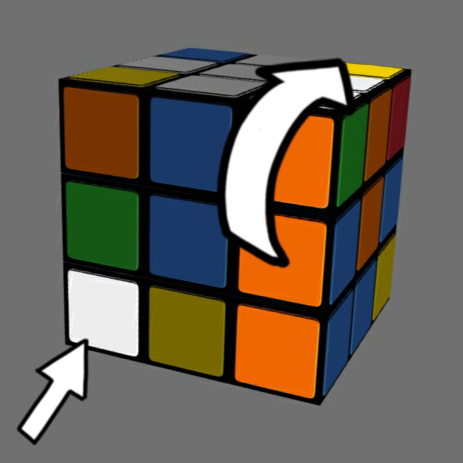

RUBIX-PLAINED
Page 2 - First Layer

PREFACE
The method I'm showing is the beginner's method, and the tutorial I'm referring to is the tutorial where I learned it from, which is a video by TheSergsB on YouTube called "How to Solve the 3x3 Rubik's Cube (Tutorial - Learn in 15 minutes)".
If you don't own a rubix cube and want to follow along anyway there's simulators online, here's a couple I tried and liked:
grubiks.com - It also has a large variety of other puzzles, like mirror cubes and the megaminx if you wanna try that, it's pretty fun.
bsehovac.github.io/the-cube - This one actually has a fixed perspective, so if you have trouble with the free perspective of the first one you can try this.
If at any point you get stuck because of something not mentioned in the tutorial, you can scroll to the bottom of the page, where I'll be showing possible solutions to some common problems. The steps with possible confusion are marked with this symbol: *
You can also watch the video for reference if you'd like, it's linked above. He also made supplementary videos linked in the description of his video.
1: THE CROSS
The first step is forming the cross. You can do this with any color, but for simplicity's sake I'll use white.

- Find an edge piece with white as one of it's colors.
- Then, align it to to the white center so the two white faces connect.

- Then, twist the layer to align the second color to the second color's center.

- Repeat this process until you have the cross built.
2: THE CORNERS
The next and last step to solving the first layer is to put in the corners.
- Find a corner piece with a white part. It should be on the last
layer, and the white part shouldn't be facing down.*
- Next, you have to hold the cube so that the white face (the face with the white center) is facing upwards. Then look at the colors of the corner piece. Twist the last layer so the corner piece is between the two corresponding centers of it's colors.

- Next, hold the cube so the white part of the corner piece is facing you.** Depending on which column the corner piece is on, you twist the bottom layer to the right or left. So like in the example, if it's on the rightmost column, twist the layer to the left.
- Then, you bring the the column down.

- Then, you twist the last layer to bring back corner piece to where it
was originally.
- Then, you can bring the column up.
- Repeat this until the you finish the white face.
Once you've done this, ideally, you've finished the first layer! You can now move on to the next page, using the navigation bar below.
HELP
- *What if the corner piece is on the first layer, but in the wrong position/orientation?
You have to bring it down to the last layer.
- Hold the cube so the white face is on top, then bring the down the column where the corner is.
- Then, you can just twist the corner either to the left or the right. The direction is up to you, but I recommend turning it so the white part of the corner will end up turned towards you. For example, in this example, if you turn the last layer to the right, it will end with the white face towards you. But you can do anything you want.
- You can now just bring the column back up, and the corner will be in the bottom layer.
- *What if the corner is in the bottom layer, but the white part is facing down?

- Hold the cube so the white face is on top, then bring down the column where the corner is.
- Then turn the last layer twice in either direction.

- You can now just bring the column back up, and the white part of the corner won't be facing down.
wca:

thesergsb:

rubiks official:


wca:
thesergsb:
rubiks official: